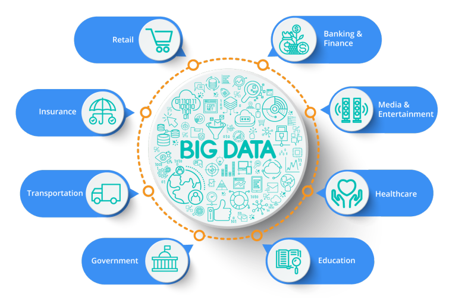
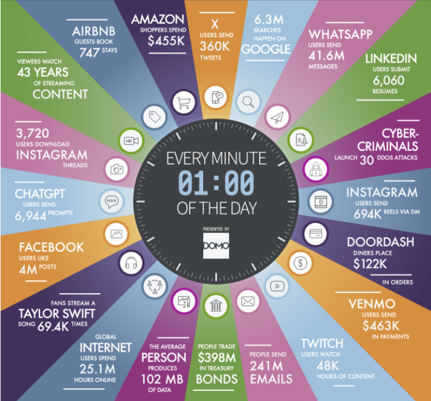
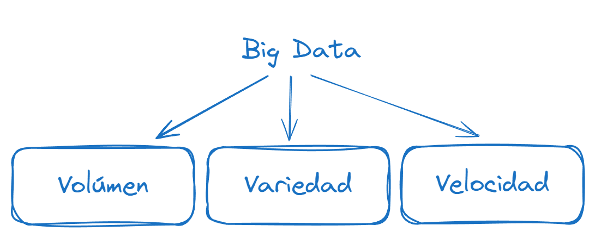
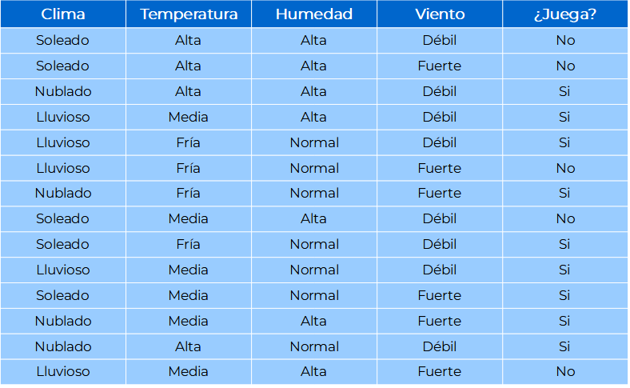
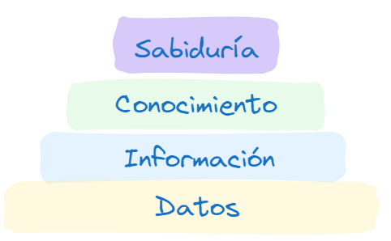
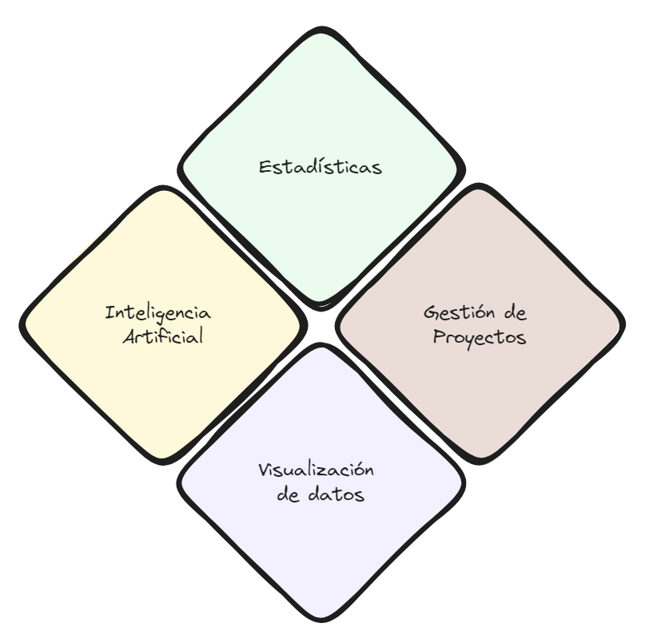
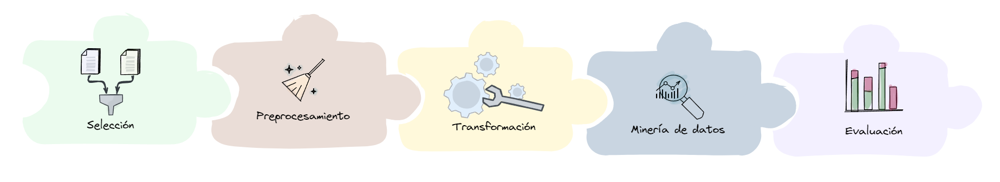
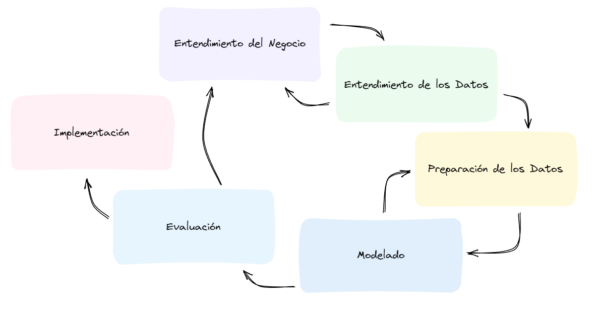

Clase 1: Introducción#
Primeras ideas sobre la Ciencia de Datos
Giovanni D. Rottoli, PhD.
Fuentes de datos#
En los últimos 20 años, los datos han acaparado todo aspecto de la vida humana.
Se obtienen datos de múltiples fuentes distintas, en grandes cantidades y en formatos diversos.

Generación de datos#
La velocidad con la que se generan los datos ha ido aumentando
Se obtienen datos de múltiples fuentes distintas y en formatos de lo más diversos.

Big Data#
El fenómeno Big Data se describe con 3 V:
Variedad
Velocidad
Volumen
Estos conceptos son dinámicos.

Minería de datos#
La minería de datos nos permite extraer conocimiento implícito en los datos.

Problemas#
Son necesarias herramientas eficientes para poder analizar bases de datos de gran volumen en un tiempo aceptable.
Son necesarias técnicas para analizar datos de distintos tipos y orígenes.
Es necesaria una metodología para abordar el análisis de forma sistematizada.
Definiciones#
Los conceptos utilizados en la disciplina varían según los autores.
Vamos a proponer un conjunto de definiciones para utilizar en este curso.
Jerarquía del conocimiento#

Datos#
Son observaciones o hechos discretos y objetivos, que se encuentran desorganizados y necesitan ser procesados.
No poseen significado o valor, ya que carecen de contexto e interpretaciones.
Información#
Se obtiene a partir de datos procesados y contextualizados.
La información posee sentido y es relevante para algún propósito.
La información posee valor y utilidad para la toma de decisiones accionables.
Permite responder preguntas: ¿Quién? ¿Qué? ¿Dónde? ¿Cuántos? ¿Cuándo?
Conocimiento#
Es información organizada, contextualizada y estructurada.
Sintetiza múltiples fuentes de información.
Provee entendimiento, experiencia y aprendizaje acumulado sobre un fenómeno dado.
Ciencia de datos#
Disciplina de la informática y de las ciencias computacionales, que brinda a la inteligencia de negocios herramientas para obtener conocimiento no trivial a partir de datos disponibles en repositorios digitales.
Herramientas#
Estadísticas: descriptores estadísticos, test de hipótesis, etc.
Visualizaciones: organización visual de los datos.
Inteligencia Artificial
Gestión de proyectos

Inteligencia Artificial#
La inteligencia artificial es una disciplina de la informática que se busque desarrollar sistemas que sean capaces de realizar tareas que normalmente requieren inteligencia humana. Por ejemplo, el aprendizaje, el razonamiento y la percepción.
Minería de datos#
Conjunto de algoritmos de aprendizaje automático (inteligencia artificial) que buscan patrones o regularidades relevantes en conjuntos de datos, obteniendo así conocimiento a partir de los mismos.
Metodologías para proyectos de Ciencia de Datos#
La Ciencia de Datos es una disciplina completa
Requiere comprender los problemas de negocio y determinar los abordajes necesarios para solucionarlos.
Incluye análisis del problema, adquisición y preparación de los datos, selección y aplicación de algoritmos, entre otros.
Se requiere administrar los recursos para llevar adelante el proyecto de una forma sistematizada.
Proceso KDD#
Knowledge Discovery on Databases (Fayyad, 1996)
Ciclo de vida: Cascada.
Enfocado en los datos y la aplicación de algoritmos.
Ignora los aspectos del dominio del problema.

CRISP-DM#
Cross Industry Standard Process for Data Mining
Estructura Jerárquica
Ciclo de vida: Iterativo Incremental
Retroalimentaciones entre fases

Problemas#
La ciencia de datos resulta útil en múltiples escenarios distintos.
Veamos algunos de ellos:
Salud#
Soporte al diagnóstico:
identificación de patrones entre enfermedades y síntomas
detección de anomalías en imágenes de diagnóstico (radiografías, tomografías, electrocardiogramas, etc.)
Creación de tratamientos personalizados
Diseño de medicamentos
Detección de focos de contagio
Transporte y logística#
Modelo de patrones de tráfico
Planificación de servicios de transporte público
Optimización de rutas de entrega (Uber eats)
Deportes#
Diseño de estrategias de juego
Análisis de métricas de desempeño
Creación de planes de entrenamiento personalizados.
Gobierno#
Detección de fraude impositivo
Análisis de la opinion ciudadana
Reducción de la burocracia
Aseguramiento de la identidad
Comercio#
Creación de publicidad “a medida”.
Creación de promociones personalizadas.
Creación de perfiles de clientes.
Predicción de intereses de los clientes (sistemas recomendadores).
Diseño de productos.
Identificación de tendencias temporales en las ventas.
Energía#
Predicción de demanda.
Optimización de generación de energía.
Ciencia y tecnología#
Detección de cuerpos celestes (Gauss, Método de los mínimos cuadrados)
Diseño de nuevos materiales.
Diseño de medicamentos
Conducción autónoma de vehículos espaciales
Descubrimiento de nuevas especies animales / vegetales
entre otros!
Ética y ciencia de datos#
Los datos tienen un impacto enorme en nuestra vida diaria, directa o indirectamente.
Por este impacto, es menester considerar los aspectos éticos alrededor del uso de estas tecnologías.
Veamos casos particulares.
Toma de decisiones#
El conocimiento obtenido brinda una guía para la toma de decisiones.
Estas decisiones pueden afectar la vida de las personas
Debemos asegurarnos de que el conocimiento sea correcto, los datos no se encuentren sesgados, y las técnicas usadas sean confiables.
Se debe evitar utilizar datos sobre raza, género, sexualidad, religión, o cualquier categoría que pueda segregar negativamente.
Privacidad y confidencialidad#
Se deben utilizar datos con el permiso de sus dueños, los mismos usuarios en caso de que sean datos personales.
Aún si se consciente el uso de los datos, no significa que estos datos se deban hacer públicos.
La seguridad de los datos es clave.
En muchos casos, es factible anonimizar los datos para trabajar con ellos sin identificar a quién corresponden.
Transparencia#
Tanto los procesos de recolección, almacenamiento, procesamiento, transformación y modelado de datos deben estar bien documentados.
En algunos casos, los modelos deben ser suficientemente explicativos y comprensibles para saber por qué se toman las decisiones que se toman.
Fuentes adicionales#
UNESCO (2022). Recommendation on the Ethics of Artificial Intelligence. ONLINE: https://unesdoc.unesco.org/ark:/48223/pf0000381137_spa